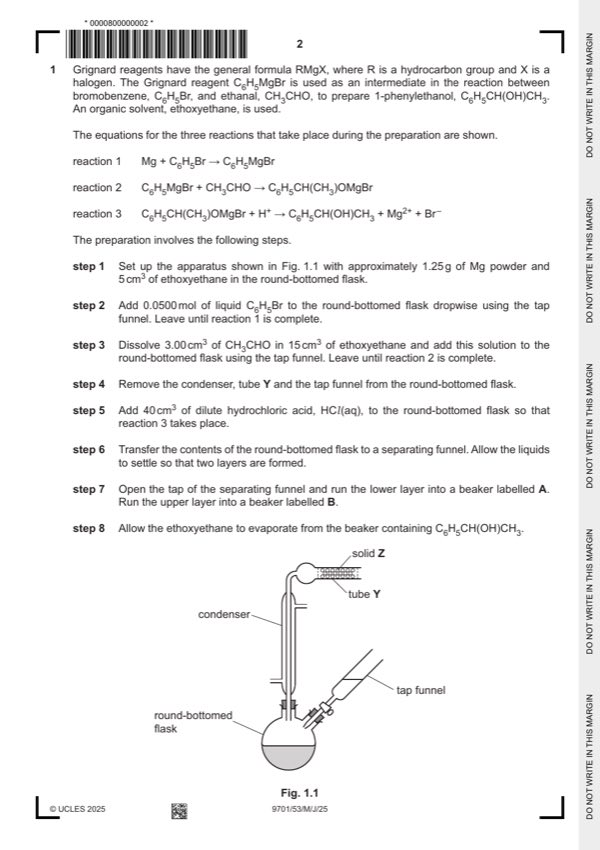

Question 0
Part 0 — solution
12.00 33.70 1.528
Mark points
- Include the ideas shown in the solution above.
Step-by-step solutions based on the mark scheme (not a mark-scheme dump).
Part 0 — solution

Part 1(a) — solution
Part 1(b)(i) — solution
Part 1(b)(ii) — solution
Part 1(c)(i) — solution
Part 1(c)(ii) — solution
Part 1(c)(iii) — solution
Part 1(d) — solution
Part 1(e) — solution
Part 1(f) — solution
Part 1(g) — solution
Part 1(h) — solution
Answer: AND
Part 1(i)(i) — solution
Part 1(i)(ii) — solution
Part 2 — solution
Part 2 — solution
Part 2(a) — solution
Part 2(b) — solution
Part 2(c)(i) — solution
Answer: 2
Part 2(c)(ii) — solution
Part 2(c)(iii) — solution
Answer: AND
Part 2(c)(iv) — solution
Part 2(d) — solution
Part 2(e) — solution
Answer: AND
Part 2(f) — solution
Part 5 — solution
Part 10 — solution
Part 15 — solution
Part 20 — solution
Part 25 — solution